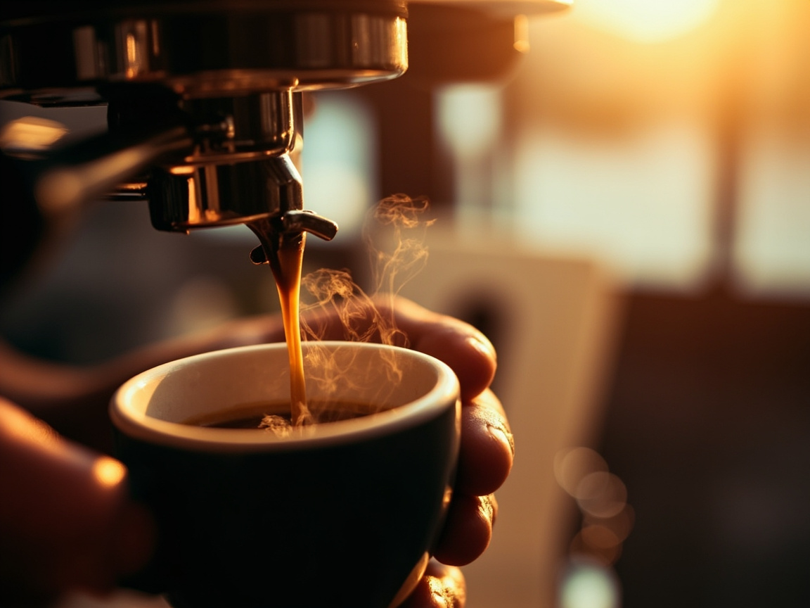

Herkunft vor Sorte
Wir kennen jeden Bauern persönlich. Jede Charge kommt mit einem Feld-Bericht — Höhe, Schatten, Erntetag, Verarbeitung. Ohne Herkunftsgeschichte wird nicht geröstet.
Wir rösten Single-Origin-Bohnen in kleinen 12-Kilo-Charges, 18 Minuten lang, auf einem Probat aus den Siebzigern. Jede Charge wird verkostet wie ein Wein — mit Herkunft, Jahrgang und Geschichte.

Drei Prinzipien, jeden Morgen wieder. Kein Marketing — nur eine Frage daran, wie viel Sorgfalt in 250 Gramm passen können.
Wir kennen jeden Bauern persönlich. Jede Charge kommt mit einem Feld-Bericht — Höhe, Schatten, Erntetag, Verarbeitung. Ohne Herkunftsgeschichte wird nicht geröstet.
18 Minuten Trommelröstung bei niedriger Flamme. Wir verzichten auf Schockröstung. Die Bohnen entwickeln Zucker und Säure in ihrem eigenen Tempo — hörbar im ersten und zweiten Crack.
Preise, Margen, Farmgate-Preis, Röstkurve — alles steht auf der Tüte. Wer unseren Kaffee trinkt, weiß, wer wie viel davon bekommt. Ehrlich, nicht romantisiert.
„Eine gute Röstung ist kein Rezept, das man abliest. Sie ist ein Gespräch zwischen Bohne, Flamme und Zeit. Man muss zuhören — mit Nase, Ohr und Zunge.“— Henrik Sandberg, Röstmeister & Gründer
Äthiopien, Kolumbien, Guatemala. Drei Terroirs, die nicht unterschiedlicher sein könnten — und doch denselben Respekt verlangen. Scrollen Sie nach rechts.
 Origin I
Origin I
Konga Kooperative, 2.150 m ü. M.
Handgepflückt zwischen November und Januar. Gewaschene Aufbereitung, 72-Stunden-Fermentation. Im Becher: Jasmin, Bergamotte, Pfirsich. Eine Tasse, die nach Tee schmeckt.
Origin II
Familia Rivera, 1.780 m ü. M.
Caturra & Castillo, vollwaschen, 14 Tage sonnengetrocknet. Dunkle Schokolade, brauner Zucker, reife Kirsche. Ein Kaffee mit Körper und Wärme — der Kaminfeuer-Kaffee.

Origin IIIBourbon & Typica, 1.600 m ü. M.
Vulkanische Mineralik, geröstete Mandel, Kakao. Gewachsen auf Asche des Fuego. Ein Kaffee mit Struktur und Tiefe — Espresso, der nicht brüllt, sondern summt.
Jede Charge folgt einer Kurve, die wir über Jahre verfeinert haben. Temperatur, Zeit und Crack-Punkte sind keine Geheimnisse — sie stehen auf jeder Tüte.
Vier Phasen, jede mit eigener Aufgabe. Trocknung, Maillard, erster Crack, Entwicklung. Wir hören den Knall, riechen den Zucker und stoppen die Charge im richtigen Moment — nicht früher, nicht später.
Wir rösten nicht für alle. Wir rösten für Menschen, die Kaffee lesen wie ein Buch. Hier drei von ihnen.
„Die Yirgacheffe hat mein Verständnis von Kaffee neu geschrieben. Ich trinke sie jetzt wie einen Riesling — langsam, mit Notizbuch daneben.“
„Endlich ein Röster, der Röstkurven und Farmgate-Preise auf die Tüte druckt. Diese Transparenz ist im Specialty-Bereich immer noch die Ausnahme.“
„Die Guatemala-Antigua ist der beste Espresso, den ich je gezogen habe. Schokolade, Wärme, kein Bitter. Bei uns kommt sonst nur Wasser ans Gerät.“
Jeden Freitag öffnen wir die Rösterei. Verkostung von drei Single-Origin-Charges, geführt von Henrik persönlich. Sechs Plätze, drei Stunden, eine Tüte frisch geröstet zum Mitnehmen.